Rule the runway and take the stage with the Bratz Pack! Customize fierce fashions, groove to songs from the Bratz Universe like ‘So Good’, and jet off to iconic cities.
Outshine mean Burdine and the Tweevil Twins in epic fashion battles—solo or with friends.
Available on: PS5, PS4, Xbox One, Xbox Series, Nintendo Switch and Steam.
Throughout this project, I studied and developed the essential elements for the conceptualization stages of a video game. I deepened my knowledge of game design by researching industry experts and successfully designed a game concept by following an iterative, problem-oriented approach.
Magefall was my bachelor's thesis for my Game Design and Development Degree, which was conceived as an investigation of the first stages of video games' preproduction and its implementation. Throughout this first stage of the project. I researched: the emotion of fun and why games produce it, player types and emotions, mechanics design frameworks (for example MDA), gameplay loops, progression design, prototyping, playtesting, documentation, game narratives and game pillars. With this new knowledge, I iterated in the idea of Magefall using tools like paper prototyping or the Five Pillars of Fun framework (Motivation, Responsiveness, Clarity, Satisfaction and Fantasy), and carried out playtesting sessions, using acquired data to improve the prototypes. Finally, I obtained a grade of 9.6, being praised by the judges for my clear writing, deep investigation and its great implementation.
After a couple of months, I decided to take Magefall to its next stage: develop a playable prototype of the game in Unreal Engine 5. Because I have solely worked in Unity these last years, I decided that it was a perfect opportunity to improve my skills in Unreal 5, as I have previously taken a course from Carlos Coronado—an official Unreal Engine instructor—where I learned the basic engine features. Currently, I am finishing the technical design, developing a structure to ensure a smooth creation of spells, weapons, status effects, entities and their interactions. Also, I am using new design tools taught at the ‘Mastering Game Mechanics’—the bootcamp I am currently enrolled in— to revise and further develop the mechanics in my game. I am applying frameworks like goals and values, compositional frameworks, and design wireframes.
The project started as my Bachelor’s Thesis, but my objectives, even now after finishing my degree, have always been the same.
Learn, understand and put into practice professional design frameworks, pipelines and techniques. My resources for this are design blogs and videos like those in Game Design Skills, GDC, Signals and Light (Combat Design) or Game Maker's Toolkit, books like the Art of Game Design or Game Feel and “Mastering Game Mechanics”, the bootcamp I am currently enrolled in.
Learn more about Unreal Engine 5 (Blueprints, engine's features, new design patterns and how to implement them). However, at the moment it is not included here.
Magefall is an Action-Adventure game prototype where you play as 2 mage siblings, Kaith and Nora, fighting on opposite sides of a revolution in a great aetherpunk city, fighting their respective enemies by using weapons and spells in a cinematic, agile style with fast tactical decisions. Missions inside its campaign are set in open sections where you must complete certain objectives and make decisions that change the environment.
Let’s take a look at the pipeline I used to define the principles of my game.
I use the goals and values of the game framework, that is what I want to achieve with the game and what I am optimizing for in these goals. For Magefall they are:
Tactical gameplay optimized for cinematography, fluidity and decision-making.
Mature narrative optimized for emotional investment and transcendence
A Living city optimized for environmental storytelling and curiosity.
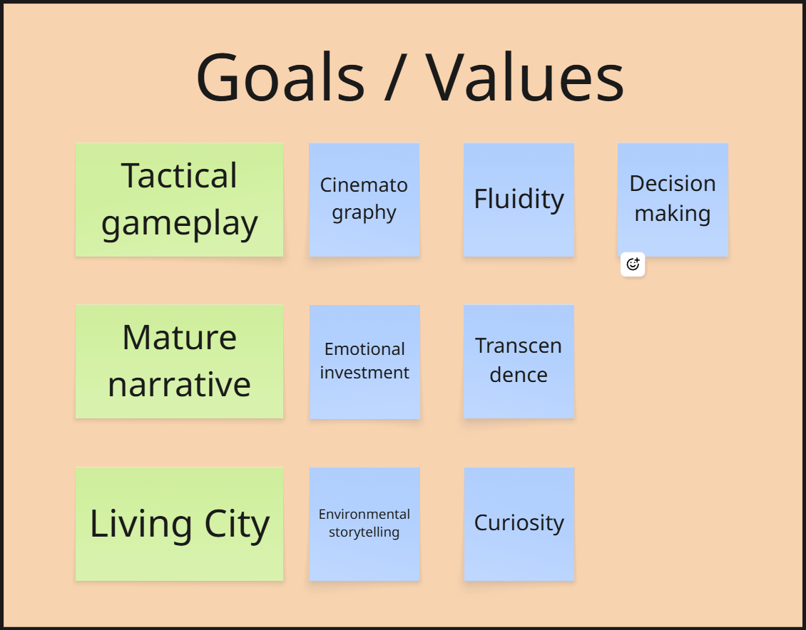
Once the goals are established, I defined the game pillars:
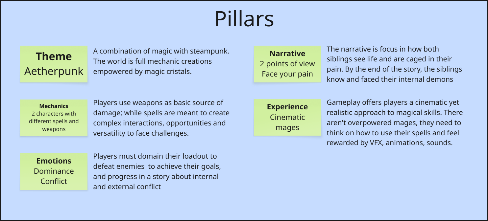
Then, I applied the lens of skill tests and defined the skills I wanted to test in the game and how I value each one, how a master in my game behaves, and what is the optimal player path.
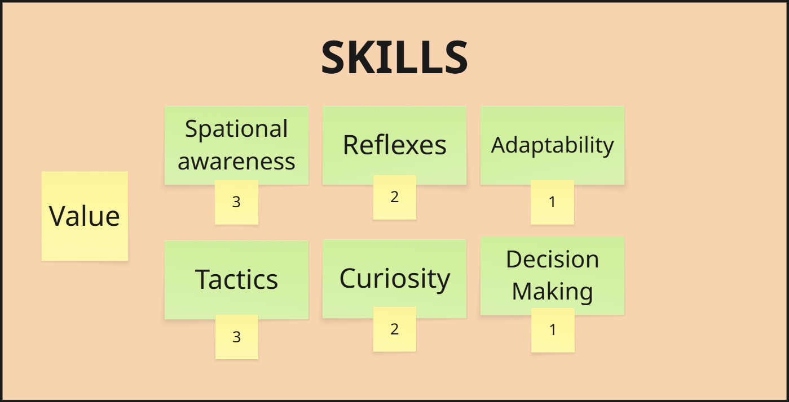
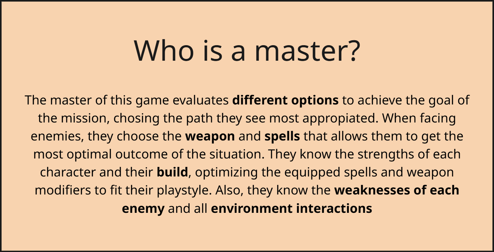
Lastly, I identified who my target players are by describing them using age, gender, gaming experience, time to play and their main and secondary motivations.
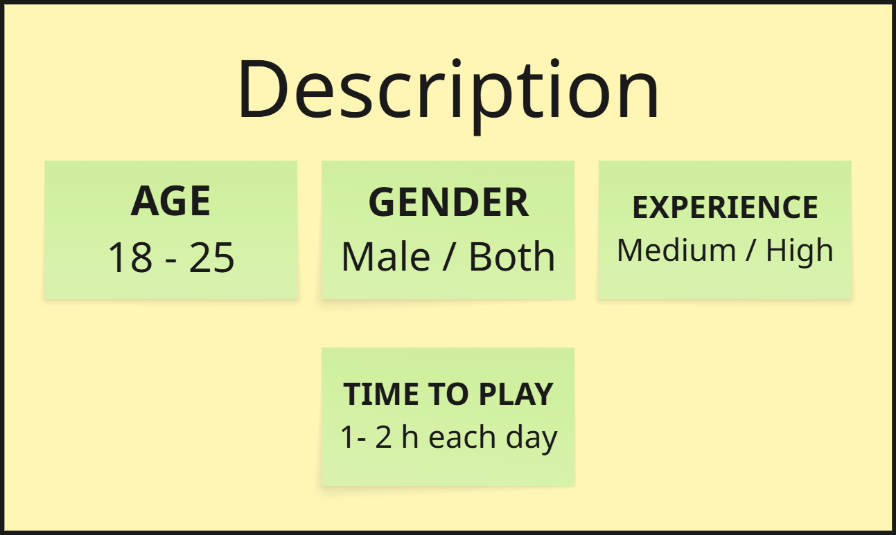
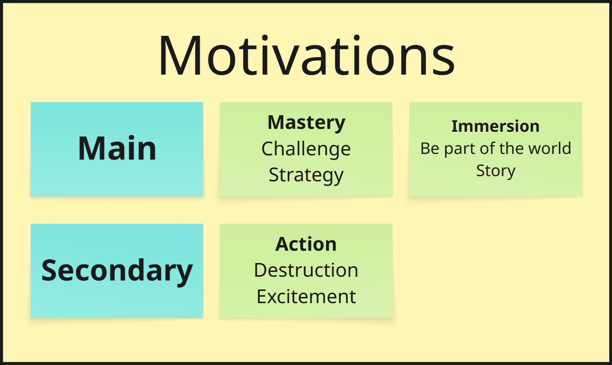
To document all of this, I gathered all this information in my personal Miro and created a first version of a one-pager brief for clearer and more concise communication.
Now, it was time to develop the idea.
The first step in the development was to implement an iterative pipeline, allowing me to create efficiently, identify problems, test features and implement player feedback in the process. To explain the process I’ll use the first iteration, where I designed the high-level game concept, and tested which parts of the whole idea were more interesting for players and should take priority for now. My iterative process for solo development is divided into the following stages.
Every iteration matters by focusing on specific problems, like testing a hypothesis or enhancing current features, allowing goals to be achieved step by step. As I mentioned before, the objective for the iteration was: Design the high-level game concept.
Here, I create at least 3 different ideas and analyze them. Then, I create a new idea combining the best parts of them and, again, analyze it and identify its risks. With this breakdown, I conclude which the best solution of them, usually the last one. This method fuels creativity, avoids tunnel vision and distills every idea to highlight their impact not only in the game, but in the whole project.
What is being designed requires different tools and lenses for its analysis—in this case I used my goals and values, game pillars—in this case emotions, gameplay & experience—, target players’ motivations, skills, and the risks of each idea and how to mitigate them.
The final solution was: An action-adventure game, combat based on weapons as main source of damage and spells as tactic tools, but no items, with a third-person camera over the shoulder. Each mission is set in an open level with decisions that affect the narrative and the section of the city both functionally and artistically.
Combat based on weapons as main source of damage and spells as tactical tools, but no items. It suits the fantasy of cinematic mages in an aetherpunk city , and it shows more possibilities of offering tactical gameplay with cinematography, fluidity and decision-making, optimized for mastery of tactics and spatial awareness. Adding items to this combination could add more depth, but for now it would only be unnecessary complexity.
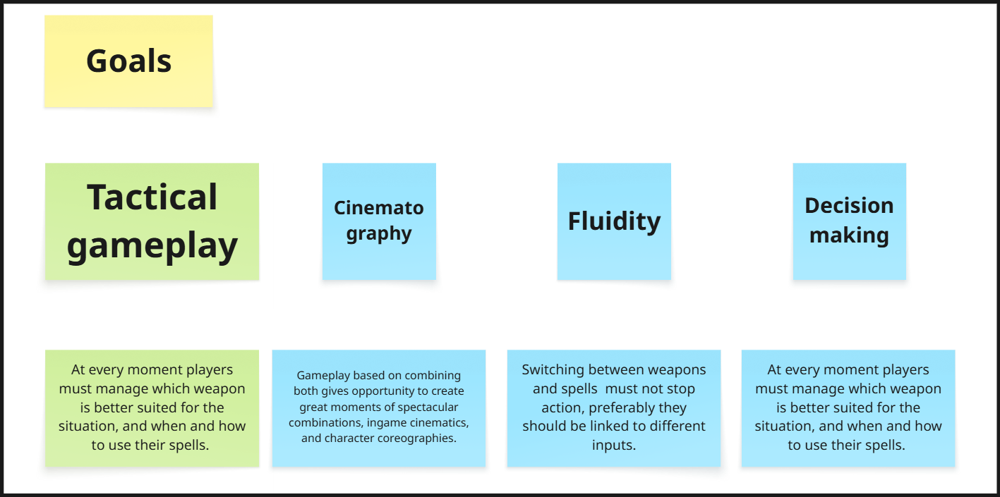
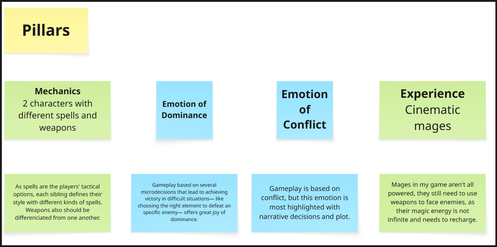
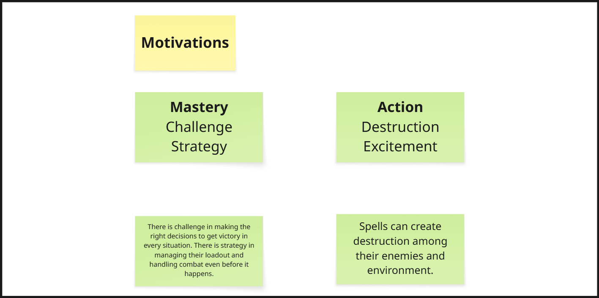
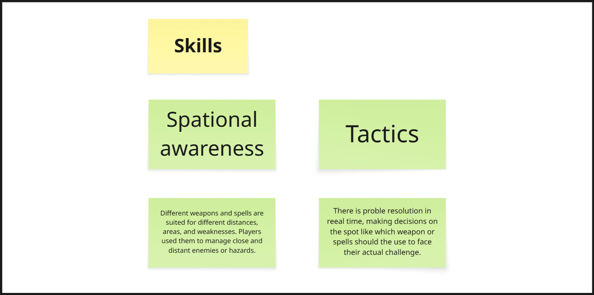
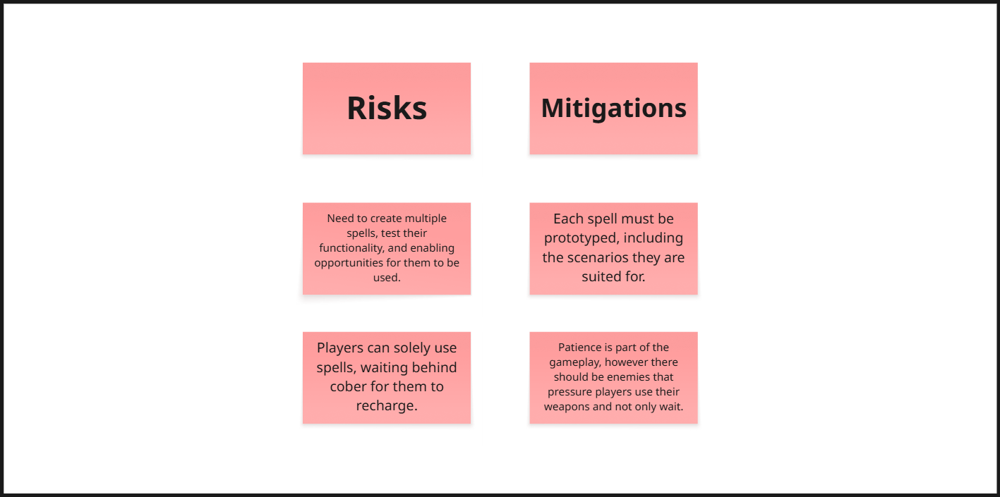
With a third-person camera over the shoulder. My goal is to create tactical gameplay with value in cinematography and emotional investment in its characters. This kind of camera offers fluid cinematic gameplay that can highlight the action, requiring spatial awareness and reflexes, emphasizing our protagonist.
Each mission is set in an open level with decisions that affect the narrative and the section of the city both functionally and artistically. This creates emotional investment by constructing a living city optimized for environmental storytelling and curiosity where players not only see how the city changes due to the conflict but actively participate in its evolution, creating immersion and requiring decision-making. An open-changing world can provide this too, but due to the world setting it would need heavy investment, creating a great risk for the project.
To group all these mechanics, I decided that the action-adventure game conveys all what I have been wanting to create with my decisions. It is based in cinematography, fluidity and strong narratives. Also, they appeal to mastery, action and immersion if emphasised.
This stage is all about creating small, fast prototypes to answer uncertainties, test for engagement and prevent wasted time on non-viable features. For the current iteration, I needed to test if the idea was interesting and which parts my target audience was most excited about, and which I should focus on. The best and fastest solution was to create another one-pager—this one solely focused on game features—and present it in a playtesting session.
I know this iteration’s problem or objective and I concluded what is going to solve it, now it is time to test the prototype with other players to see if there is fun in it, find design problems, and see what I have missed that could enhance or diminish player experience.
The questions that must be asked in the playtesting are unique to each iteration, but I start by stating concrete things I need to find out, then create questions that would give me that information and separate those questions by how they can be best answered: surveys, interviews or by myself with observation. Also, I define what I have to explain to testers before they start playing.
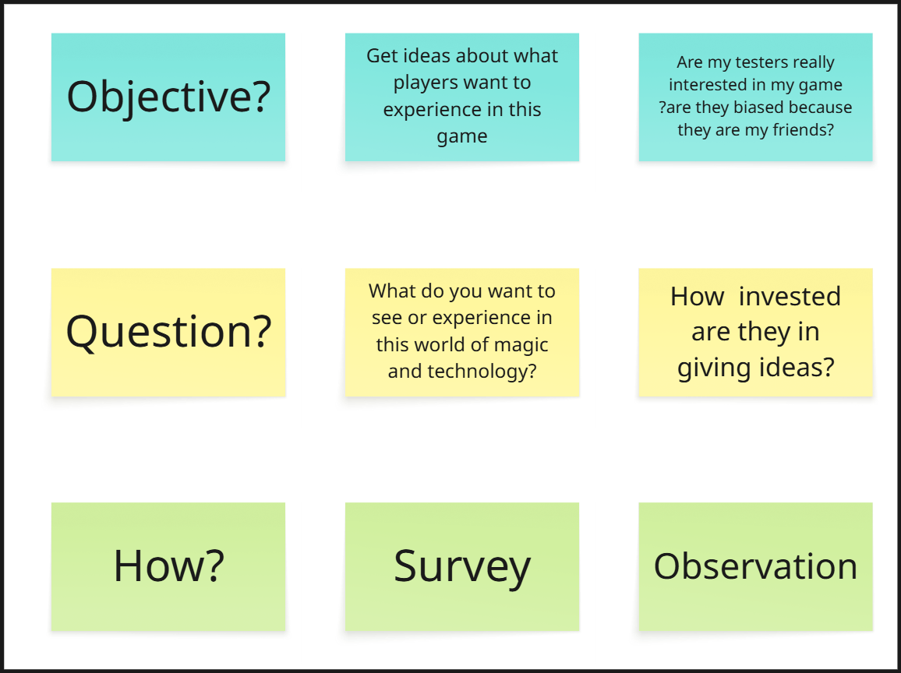
For that, I reached out to some friends, gave them a survey to know which player type and demographics group they belonged to, and identified key testers which belonged to my target audience.
Once I got my target testers, I presented the idea to them and found out the strongest and weakest points of my game. For example, by asking which 2 aspects of my game are most interesting, I obtained that all features I included are quite attractive to overall players, but target testers agreed that the magic loadout and the narrative with 2 points of view were the most attractive. Also, the game was pretty well received by all of them.
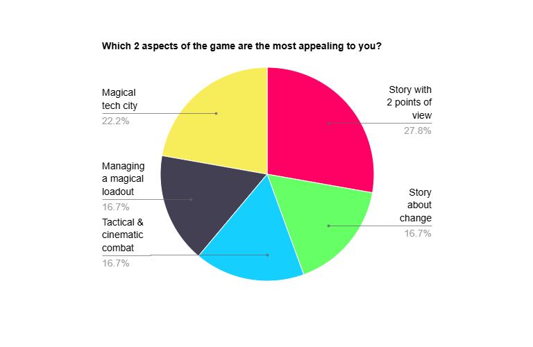
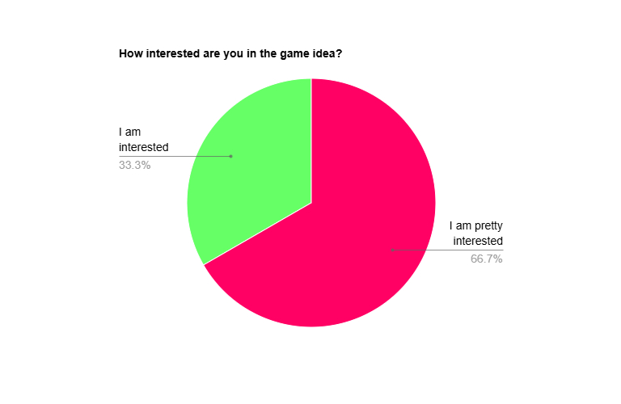
So I concluded, that was green light and I should focus on:
Decided the basic information of my game, it was time to design a basic core gameplay loop. I design gameplay loops by stating the challenges of my game, what are the high-level player actions to face them, and what rewards do they get afterwards—for now they are only obtained if they are victorious, but they can also be obtained if defeated like, for example in a rogue-lite game.
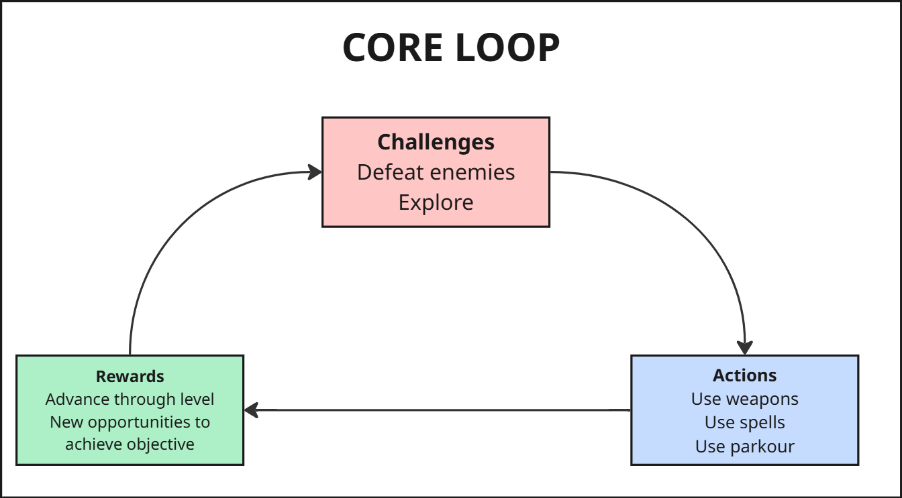
I updated my one-pager brief with the new information and I document the game's basic information. Things like, this is a single-player, action-adventure game, for consoles and PC, premium with intended duration of 20 hours, as I want the game to be long enough to develop all the ideas I have for the narrative and its progression, but time will tell if the game supports such time.

To properly document the entire process and why I choose certain solutions, I write down all the information of each iteration in an “Iteration document” in Adobe Indesign. One-pagers are appropriate for clear concise communication with the team or for fast iterations like in preproduction, but I must keep all the process in a detailed document.
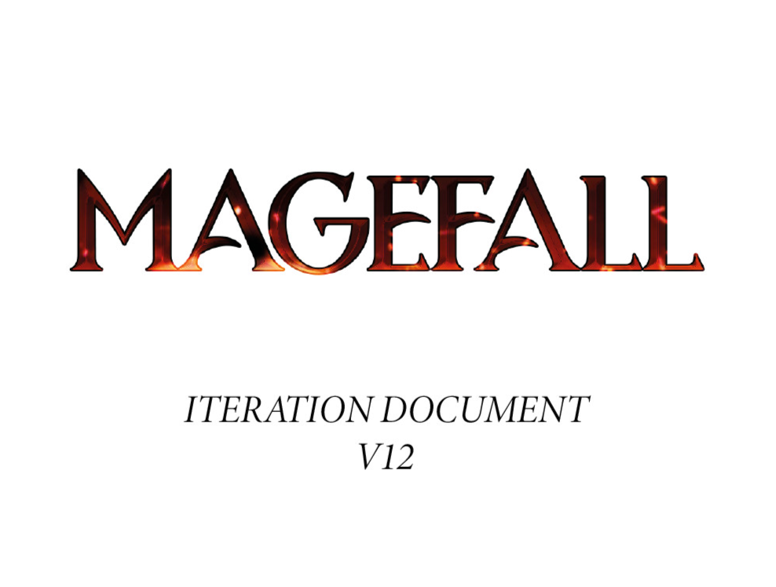
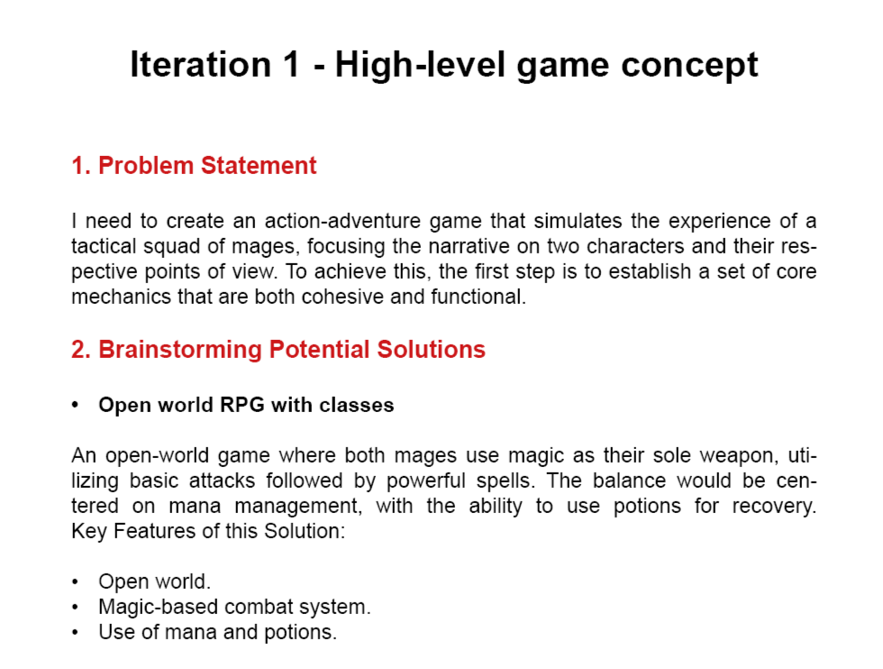
Lastly, evaluation is not only focused on the game, but also on the pipeline and how the team can enhance it. I concluded this course of action has given me great value, so I could follow it without major change and continue with the next iteration.
As you see, this pipeline is enabling me to develop my prototype answering uncertainties, keeping my target audience involved, removing risks and approaching my development objective by objective.
The objective for the second iteration was: Design a combat system that suits my game idea. Broad, but functional in the current state of development.
I wrote down some ideas on how to solve the problem, then I analyzed them with the following frameworks:
My game's goals/values
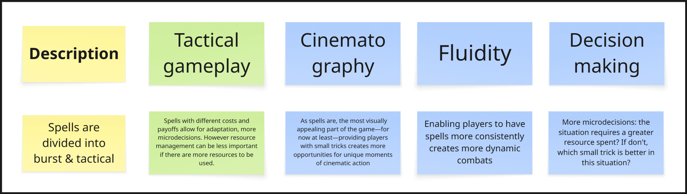
Five Pillars of Fun: how is the player motivated?, how does the game respond to it?, how does it provide satisfaction?, is it clear? how does this suit the fantasy?.
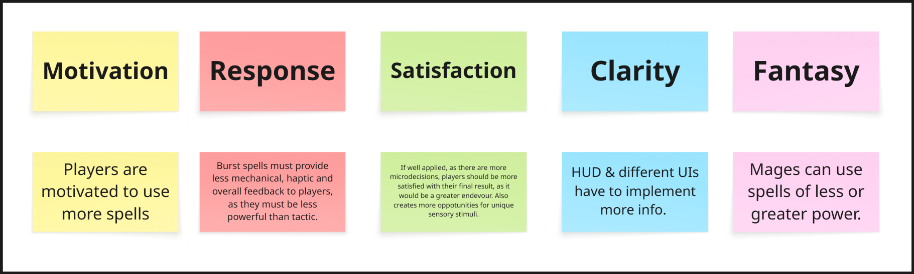
Target players’ motivations
Risk identification: what are the risks of each idea and how do I try to prevent them?
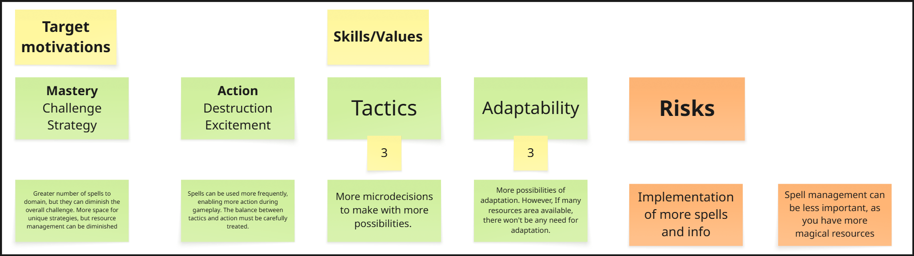
I created a new idea with the best parts of the previous ones and analyzed it again.
To decide my final solution, I asked myself these questions:
After the analysis, I concluded that the best option was composed of:
Spells grouped by elements instead of customizable sets. Clearer an easier to use in combat. Options while managing your spell loadout are much clearer but at the same time interesting, you decide which possibilities you want for each element, not your whole loadout.
Divide spells into Burst spells—low-powered spells witch shorter cooldown—and tactic spells—high-powered spells with larger cooldown. Players now have to manage 2 kinds of spells, one designed for common use but small payoff and other with more precise uses with greater payoff. This enhances the fantasy of cinematic mages showcasing how variable the of mages' powers are, forcing players to think which kind of spell should they use, making tactical decisions based on resources and payoffs. Creating a sole type of spells seemed more simple to implement, but less deep.
Slots with cooldown instead of mana for each kind of spell, allowing to use the same tactic spell twice in a row. It shows much clearer when you can use certain spell. Also, their representation in the HUD is smaller, allowing more space to see the action, and with that increasing immersion and the game's cinematography.
Kaith uses ranged weapons and Nora uses melee weapons. As we needed 2 character for the game, I wanted them to be as different in their mechanics. Learning to use both characters offers more opportunities for challenge, forcing adaptation to their unique strategies. I wanted to include conflict—one the pillar emotions of the game—in the design of both characters, so I made the emotional reckless character to use ranged weapons and the logical strategic character to face enemies in close combat. This is quite opposite to common character designs, and creating this unique feel for each character is one of the key objectives of the project.
Kaith uses heat instead of normal ammunition. Getting out of bullets forces adaptability and looking for more foments exploration and testes spational awareness. However, the objective of the game is that players adapt to different situations by choosing the right tools for it, motivating them to learn how each weapon or spell works on different setups. Heat balances weapons by managing how many shots can weapons shoot before overheating, and those who want action can go directly to the next fight without the need to look for ammunition. Also, as the game features technology based in magic crystals, weapons that use them as ammunition fits the fantasy.
Now it was time to prototype the system.
I could have jumped into an engine and started prototyping, but if in the end the solution wasn’t good at all, that would have been a lot of wasted time. Instead, I used paper prototyping, a technique where you simplify a game’s feature or system into a simple board game. With your idea simplified into its core, now you can test if it is fun, functional and iterate on it fast, only jumping into complex engine implementations, once you’ve faced uncertainties and know the feature is appropriate for your game.
For that, I created an online board, simplifying my action-adventure game with a third person camera into a turn-based game with a tiled map. But for that, I needed to design my characters. Also, the construction of this prototype led to the inclusion of covers as main defensive method for characters. Furthermore, stealth was designed to include this kind of gameplay and differentiate more Nora from Kaith—as the first is more effective in it due to her darkness spells explained later in the section—and give players more wys of expressing themselves; however this will be tested in the future to see if it is appropriate.
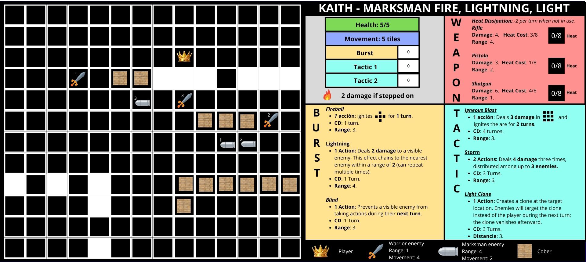
The first step was to define player actions within game, describing how it functions across input, mechanics, receivers and system. As we are just creating the first ideas, at this time they are going to be broad because we need to iterate fast, but as the project advances they are going to be much more specific and varied. For example, I have currently created 2 sets of actions, one for each character.
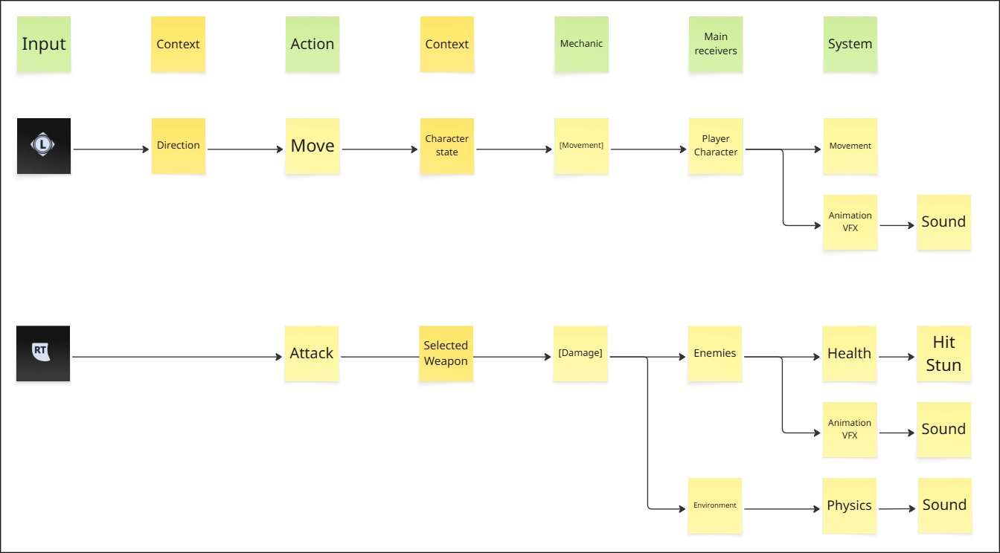
Then, I established how I wanted each sibling to feel using goals and values, establishing their goals with Masahiro Sakurai’s technique to define characters with a sentence: Kaith is an agile shooter with multiple ranges of effectiveness, while Nora is a close combat character that flows between being a single-target assassin and a warrior with great area control.
Their respective magical elements they can use and styles of combat come from both gameplay and story reasons: Kaith is emotional and hot-blooded like fire; Nora is an introverted and cold-blooded like ice. Kaith is the fake light of a revolution that in the end will try to end their kind; Nora grieves below the dark shadow of a totalitarian government that would push her to the edge. Kaith flows in life like a wild wind, Nora can’t move forward steadily like earth.
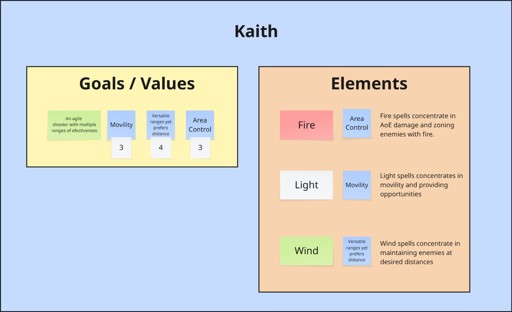
For each character, I created several spells and weapons with different roles, but, in future iterations, I expanded them to be specific tools for the players to use. For that, I used:
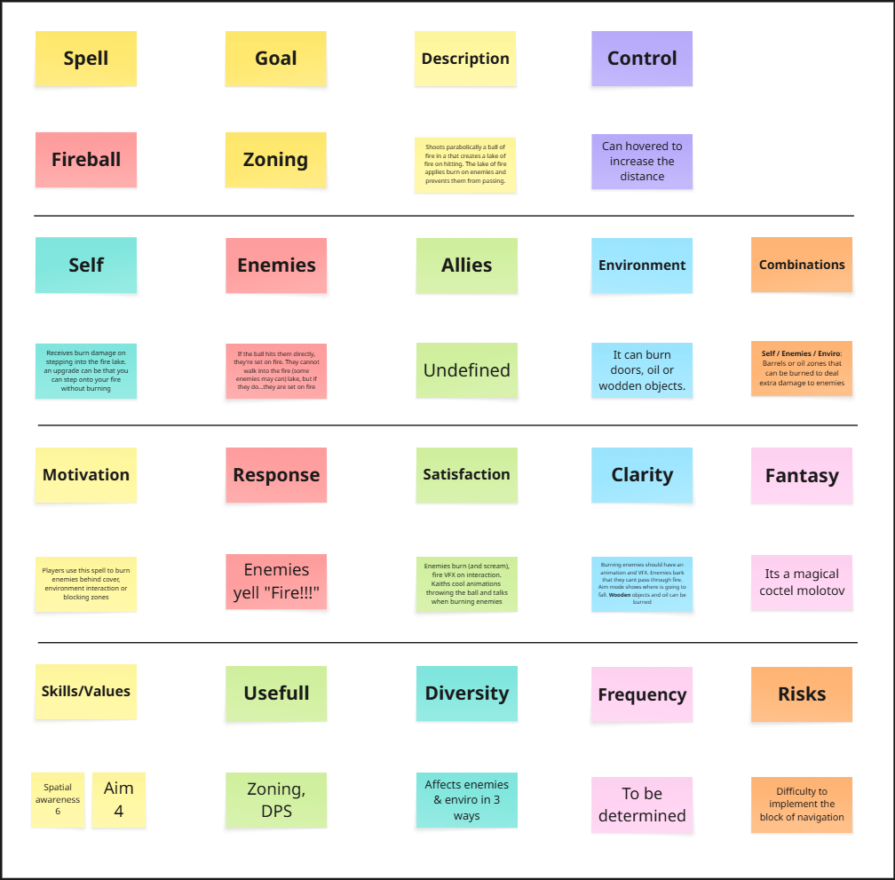
Once I designed the spells and weapons, I included them in my paper prototype, designed a set of levels that sequentially introduced players to the mechanics, iterated on them alone, and jumped into the next stage.
Now that I have my solution ready, I needed to state exactly what I wanted to find out in the playtesting session. These are the objectives of this testing:
In this case. My playtesters played the prototype in an online call with me, where I managed and moved enemies to create different situations for them, checking how they could beat them.
Finally, I interviewed them after they finished and handed them the survey.
With all the needed data obtained, I started to evaluate. Some relevant answers and observations were:
Therefore, I concluded that weapons and spells provide fun and different approaches to the same situation, allowing players to express themselves, being this the most interesting aspect of the game. However, spells needed to be more necessary and synergize with weapons, as players who like to solely weapons need to be encouraged to use spells. Also, the lack of interaction between weapons and spells reveal to be a severe flaw.
My observations in the process were that testing sessions were too long, between 90 and 120 minutes, and managing everything by myself was tedious for both designer and tester. However, I created a testing ground I still use nowadays to test new features. To make testing sessions more dynamic, I gave players maximum time to make decisions to both reduce session time and give the sensation of urgency similar to a real-time game.
Now,I created a one-pager for the team, and I stated the objective for the next iteration: Find a solution for players not using spells and enhance their overall appealing. I polished weapons and spells by creating spells related to weapons, connecting both mechanics so players that are much more interested in weapons have their own spells to buff or alter them. It proved to be a total success and made both spells and weapons more rewarding, as they are now used together to get the most out of them and create more solid system.
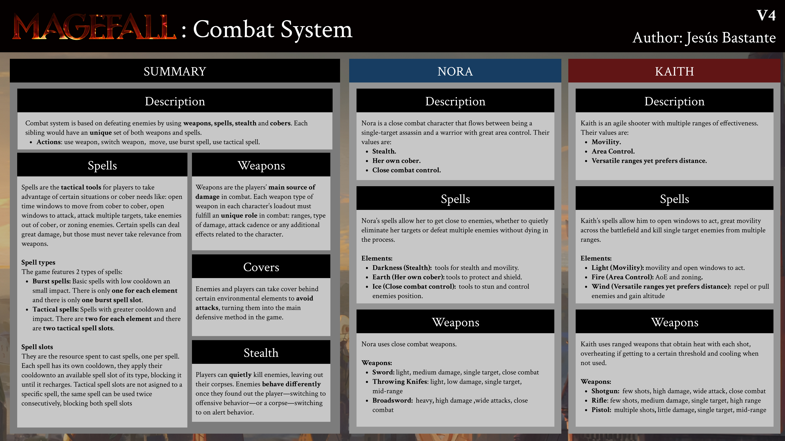
Lastly, in this iteration I designed how player characters progress through the game. Here, I concluded how my current mechanics can evolve to offer more control, possibilities and power, but offering players the opportunity to express themselves and make decisions about how they wanted to upgrade their loadout. So, the objective of this iteration was: Design player progression optimized for decision-making and current content.
I decided player progression to be both vertical and horizontal: Spells now have a level, which can be upgraded to not only enhance their basic stats, but add new aspects to it. For example: you can upgrade fireball to deal damage on hit, enhance its distance or reset the duration of its fire pool by killing enemies within it. This spell progression enhances spells providing more use cases and further boost their current strengths, forcing players to decide how much they value each upgrade while also receiving new spells. As for weapons, you get modifiers with different rarities to solely enhance basic stats or tweak some aspects of them. This way, as players advanced throughout the game they modify their weapons to counter specific enemies or adapt them to your style, but rarities offer tradeoffs and more variables in each decision.
I designed those to motivate players to immerse themselves in content with a clear objective of getting new spells and modifiers, as they experience the fantasy of being a weapon-expert mage, satisfied by how their loadout progresses by responding to their actions.
Once I had the basic progression mechanics, I jumped to design a further elaborated gameplay loop, designing loops for minute to minute gameplay, hour to hour and day to day. For this, I applied the same concepts of challenge, actions and rewards, but adding how each loop feed into each other.
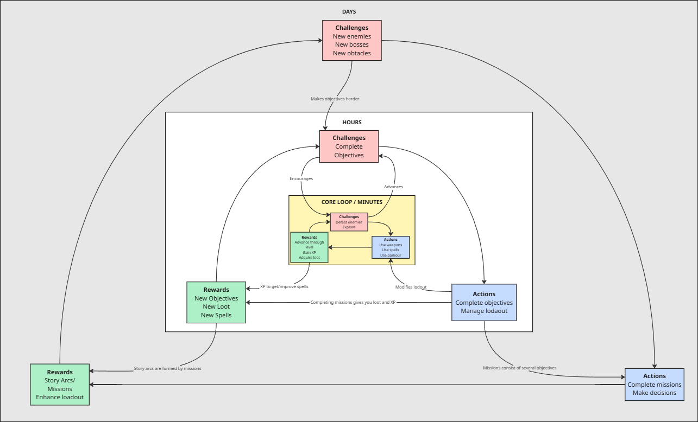
The prototypes for this iteration were created to determine: how to clearly communicate progression to players, how intuitive the systems are, how engaging the experience is, and if it provides players with opportunities for creative expression. To achieve this, I designed a new board simulating the weapon modifier and spell upgrade menus, incorporating various options with trade-offs in each. For example, I included a Legendary modifier that enhances basic damage, another that reduces spell cooldowns, and an Epic modifier that increases damage dealt to enemies from behind.
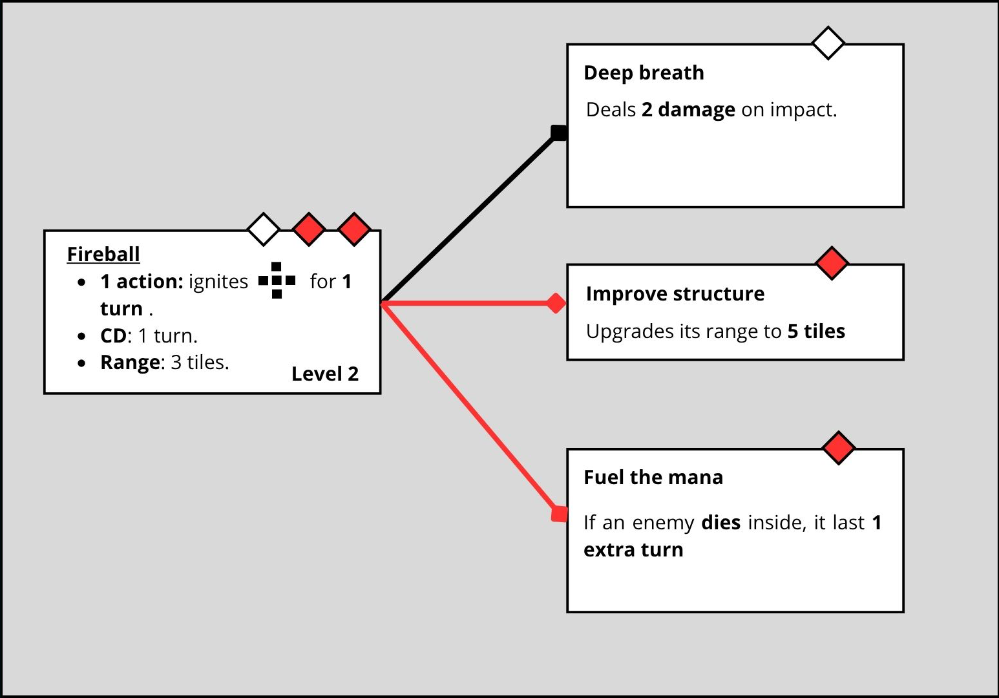
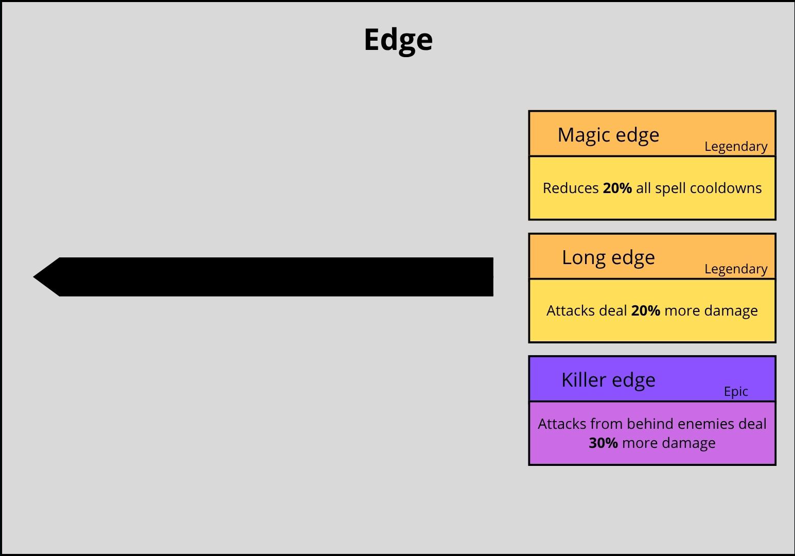
After conducting several playtests with target testers, I concluded that players perceive progression clearly and intuitively, yet it was not as engaging as expected. Feedback indicated that the systems felt similar to other games; while not intrinsically bad, more original ideas could be incorporated. Despite this, I observed how testers experimented with many different combinations of modifiers and spell upgrades. Furthermore, some testers expressed that managing inventories and loadouts is unappealing if the systems are overly complex or cluttered with too many options.
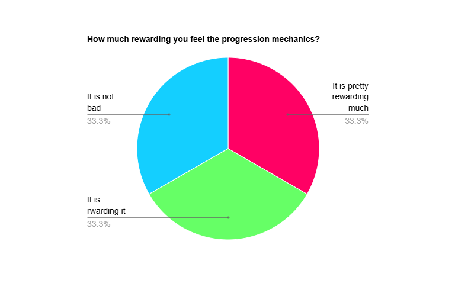
In my self-evaluation, I concluded that the progression prototype would have been much more effective if it had been integrated into a set of levels. Providing modifications as a reward, followed by a new level to test the results, would have felt more natural and intuitive for the players.
With basic gameplay and progression designed, the objective for the next iteration was stated as: Create a basic playable in engine that conveys the general idea of the game.
That is how I designed Magefall for now. The next and current step of development is to create a prototype inside an engine. In my case, I am exploring Unreal Engine 5, where I am going to check and refine how the game behaves in the virtual space, design 3Cs, a basic level, a complex enemy behavior and to sum up, a core loop prototype that highlights how this video game can be.
A brand-new spaceship hero shooter where you choose your character, custom your weapons and fight your rivals to get to the top of the Arena. Each game is a best of 3 match where you level up your ship to unlock your powerful boosters and abilities.
Available on: Itch.io.
Delve into a futuristic world of mystery where everything feels like a game. However, your decisions will ultimately reveal the truth about who you really are.
Available on: Itch.io.
Born in 2003, my interest in video games started at the age of three, allowing me to internally develop an intuitive understanding of why different mechanics work and the objectives behind design decisions focused on the player experience . As a child, I also spent long evenings playing with LEGO, imagining stories and worlds that later inspired me to begin writing, programming, and cultivating a strong interest in storytelling and art.
I recently received my Bachelor's degree in Game Design and Development from Rey Juan Carlos University in Madrid. During these years, I studied game design, the video game production pipeline, and programming in C#, C++, javascript and Unity Engine . Furthermore, my desire for improvement led me to independently studying design and participating with colleagues in several game jams as a designer and storyteller (and even once as an art director). This experience has significantly strengthened my communication, team working, analysis, and problem-solving skills.
This year, my first multiplatform project, 'El Coco', was released, where I collaborated with the Recotechnology S.L. team as a Game Designer and Producer. My responsibilities included designing difficulty and progression systems, structuring the narrative, implementing levels and enemies, leading the team in my production role, and preparing the game pages for all launch platforms.
This is just the beginning; my passion for games and continuous desire to learn drive me to seek new horizons and further develop my professional skills.